数据结构八股文
转载自:https://github.com/guaguaupup/cpp_interview/blob/main/数据结构及算法.md
手撕memcpy
memcpy函数是c和c++使用的内存拷贝函数，函数原型是：
1void *memcpy(void*dest, const void *src, size_t n);表示由src指向地址为起始地址的连续n个字节的数据复制到以dest指向地址为起始地址的空间内。
与strcpy相比，memcpy并不是遇到’\0’就结束，而是一定会拷贝完n个字节。
注意事项：对于地址重叠的情况，上述函数的行为是未定义的，因此要考虑到此问题
要点：void*类型的指针不能运算，必须强转
必须要考虑内存重叠问题(画个图自然就明白了！)
|
|
十大排序算法

排序算法的稳定性：在具有多个相同关键字的记录中，若经过排序这些记录的次序保持不变，说排序算法是稳定的。
插入排序O(n^2^)
-
直接插入排序
动画演示如图：
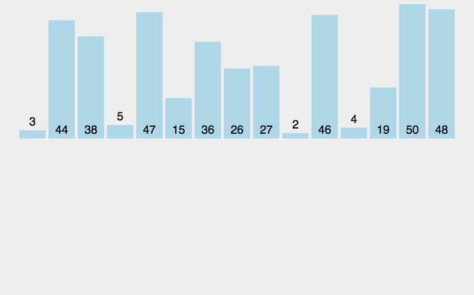
代码如下：
1 2 3 4 5 6 7 8 9 10 11 12 13 14 15 16 17 18void Straight_Insertion_Sort(int a[],int length){ for (int i = 1;i < length;i++) { if (a[i]<a[i-1]) { int temp = a[i]; for (int j = i - 1;j >= 0;j--) { a[j + 1] = a[j]; if (a[j] < temp) { a[j + 1] = temp; break; } if (j == 0 && a[j] > temp) { a[j] = temp; } } } } } -
折半插入排序
主要分为查找和插入两个部分
图片演示：
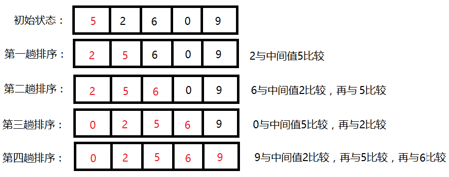
代码如下：
1 2 3 4 5 6 7 8 9 10 11 12 13 14 15 16 17 18 19 20 21void Binary_Insert_Sort(int a[],int length) { int low, high, mid; int i, j,temp; for ( i = 1;i < length;i++) { low = 0; high = i - 1; temp = a[i]; while (low<=high) { mid = (low + high) / 2; if (temp<a[mid]) { high = mid - 1; } else { low = mid + 1; } }//while for ( j = i - 1;j > high;j--) { a[j + 1] = a[j]; } a[j + 1] = temp; }//for(i)
冒泡排序O(n^2^)
思路：两两比较元素，顺序不同就交换
图解：
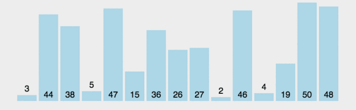
代码：
|
|
选择排序O(n^2^)
思路：每一次从待排序的数据元素中选择最小（最大）的一个元素作为有序的元素。如果是升序排序，则每次选择最小值就行，这样已经排好序的部分都是生序排序选择排序是不稳定的，比如说（55231这种情况，两个5的相对顺序会变）
图解：
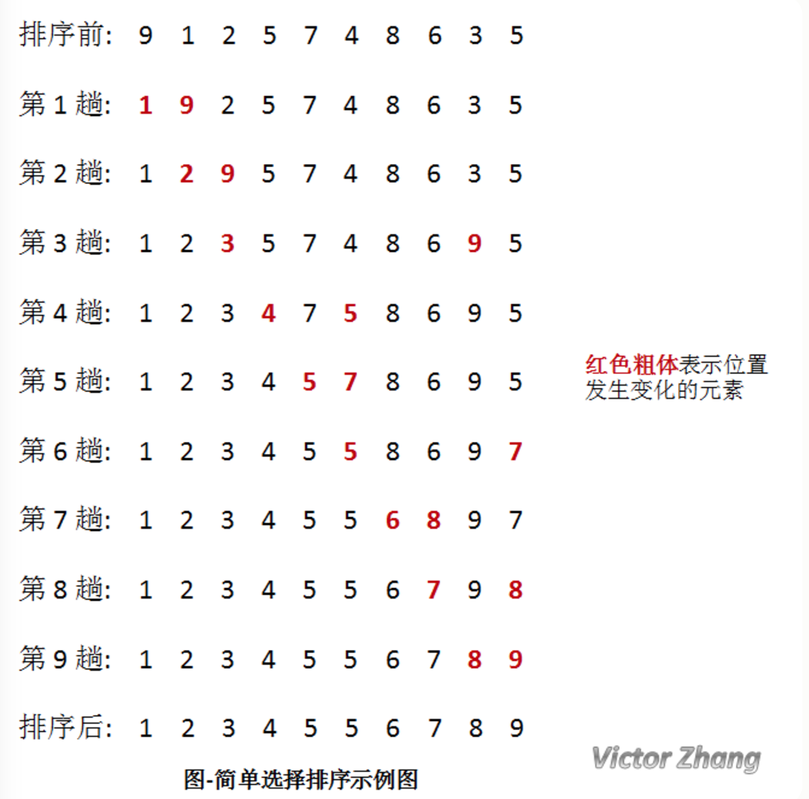
代码：
|
|
希尔排序——缩小增量排序O(nlogn)
思路：
希尔排序又叫缩小增量排序，使得待排序列从局部有序随着增量的缩小编程全局有序。当增量为1的时候就是插入排序，增量的选择最好是531这样间隔着的。
其实这个跟选择排序一样的道理，都是不稳定的比如下图7变成9的话，就是不稳定的
图解：
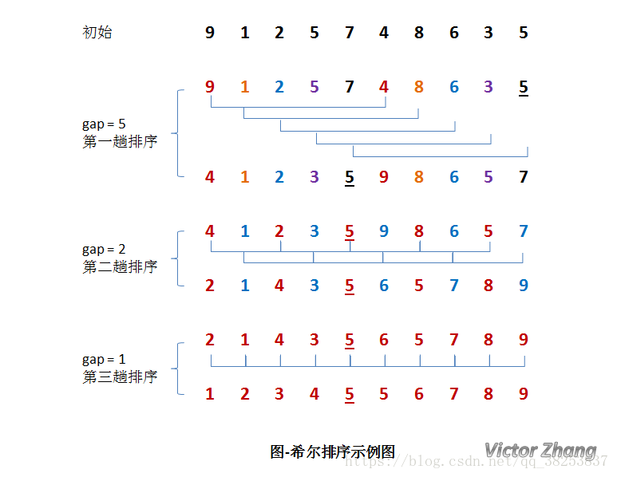
代码：
|
|
快速排序O(nlogn)
思路：快排的核心叫做“基准值“，小于基准值的放在左边，大于基准值的放在右边。然后依次递归。基准值的选取随机的，一般选择数组的第一个或者数组的最后一个，然后又两个指针low和high
图解：“基准值就是第一个元素”
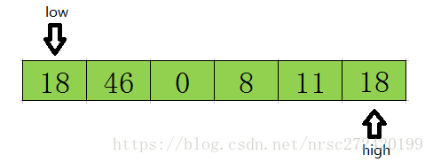
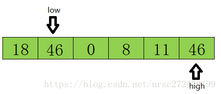
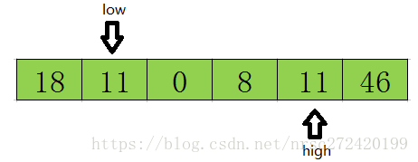
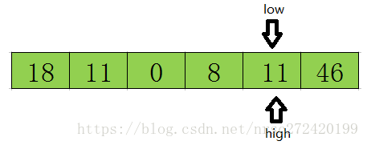
1）设置两个变量I、J，排序开始的时候：I=0，J=N-1；
2）以第一个数组元素作为关键数据，赋值给 key ，即 key =A[0]；
3）从J开始向前搜索，即由后开始向前搜索（J=J-1即J–），找到第一个小于 key 的值A[j]，A[j]与A[i]交换；
4）从I开始向后搜索，即由前开始向后搜索（I=I+1即I++），找到第一个大于 key 的A[i]，A[i]与A[j]交换；
5）重复第3、4、5步，直到 I=J； (3,4步是在程序中没找到时候j=j-1，i=i+1，直至找到为止。找到并交换的时候i， j指针位置不变。另外当i=j这过程一定正好是i+或j-完成的最后另循环结束。）
代码：
|
|
堆排序O(nlogn)
思路：堆是具有以下性质的完全二叉树：每个结点的值都大于或等于其左右孩子结点的值，称为大顶堆；或者每个结点的值都小于或等于其左右孩子结点的值，称为小顶堆。堆排序分为两步：首先将待排序序列构造成一个大顶堆，此时，整个序列的最大值就是堆顶的根节点。随后第二步将其与末尾元素进行交换，此时末尾就为最大值。然后将这个堆结构映射到数组中后，就会变成升序状态了。（即升序—大根堆）
当数组元素映射成为堆时：
- 父结点索引：(i-1)/2
- +左孩子索引：2**i*+1
- 左孩子索引：2**i*+2
图解：
基本思想：
- 首先将待排序的数组构造成一个大根堆，此时，整个数组的最大值就是堆结构的顶端
- 将顶端的数与末尾的数交换，此时，末尾的数为最大值，剩余待排序数组个数为n-1
- 将剩余的n-1个数再构造成大根堆，再将顶端数与n-1位置的数交换，如此反复执行，便能得到有序数组
代码：
|
|
归并排序(nlogn)
思路：分治思想，将若干个已经排好序的子序合成有序的序列。
图解：
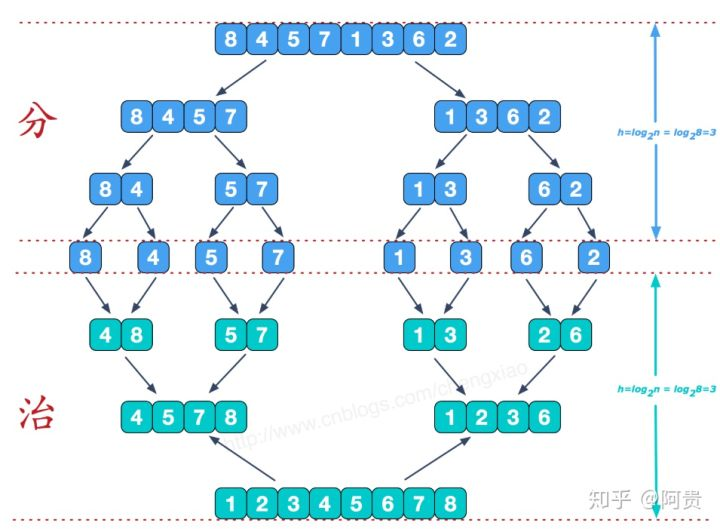
代码：
|
|
代码看不懂没关系，参考链接
计数排序O(n+k)
思路：
将待排序的数据存放到额外开辟的空间中。首先找出元素的最大最小值，然后统计每个元素i出现的次数，然后放入数组i中，数组中存放的是值为i的元素出现的个数。额外数组中第i个元素是待排序数组中值为i的元素的个数。因为要求输入的数有确定范围，同时只能对整数进行排序，有场景限制。
图解：
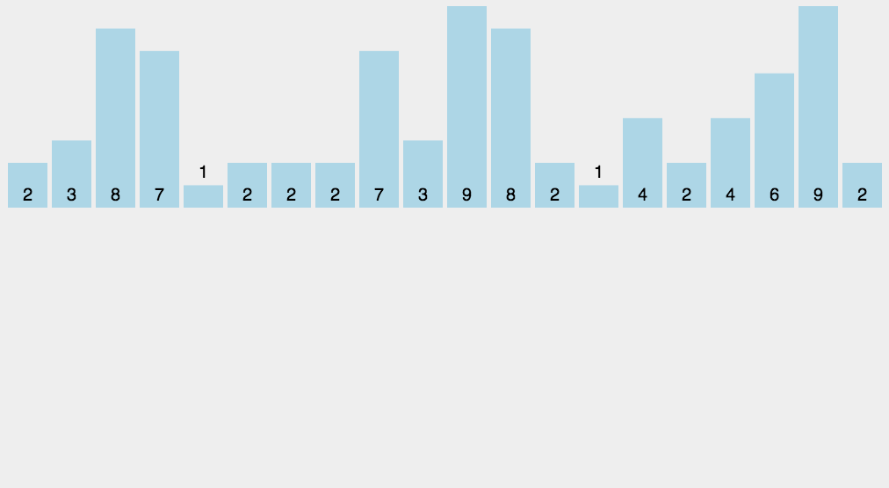
代码：
|
|
基数排序O(n*k)
**思路：**基数也就表明桶的个数是定死的，就是10个。基数排序的思想是，从个位依次开始排序，首先按照个位的大小排序，将改变的序列按照十位开始排序，然后一次往后……
图解：

代码：
|
|
桶排序O(n+k)
**思路：**基数排序和计数排序都是桶思想的应用。桶排序是最基本的
首先要得到整个待排序数组的最大值和最小值，然后设置桶的个数k，这样可以得到每个桶可以放的数的区间。
然后遍历待排序的数组，将相关区间内的数放到对应的桶中，这样桶内在排序，就使得整个序列相对有序
图解：
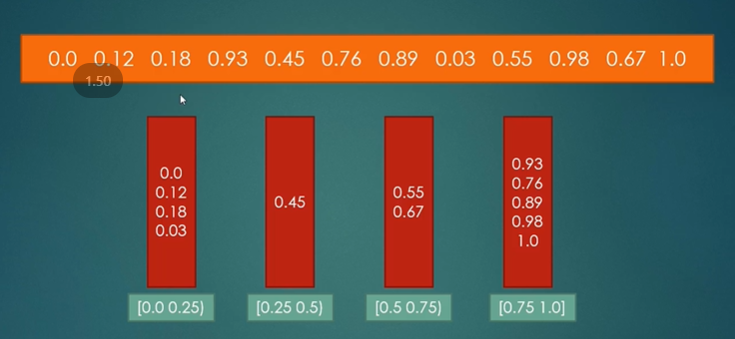
代码：
|
|
查找算法（七大查找算法）
顺序查找
顺序查找适合线性表，比如说数组和链表这种线性存储结构的。
时间复杂度为O(n)
二分查找
要查找的元素必须是有序的
时间复杂度为O(logn)
插值查找
对于差值查找来说，二分查找更近似于一种傻瓜式的查找方式。因为二分查找每次都从mid开始的，这样比较呆，没有很大的自主性。
因此对于差值查找：mid=low+(key-a[low])/(a[high]-a[low])*(high-low)，这种方式来自适应选择，减少比较次数
二叉查找树（BST）
二叉查找树的性质：
- 任意节点的左子树不空，则左子树上所有结点的值均小于它的根结点的值；
- 任意节点的左子树不空，则左子树上所有结点的值均小于它的根结点的值；
- 任意节点的左、右子树也分别为二叉查找树。
它和二分查找一样，插入和查找的时间复杂度均为O(logn)，但是在最坏的情况下仍然会有O(n)的时间复杂度。
红黑树
B树和B+树
分块查找
分块查找是有序查找的一种改进吧，即把元素放到不同的块儿中。每一块儿中的节点不必有序，但是块与块之间必须有序
即第一块任意元素的关键字都必须小于第二块任意元素的关键字。
先用二分查找到在那一块，然后再进行顺序查找。
哈希查找
key - value键值对，是一种时间换空间的算法。
非递归遍历二叉树
-
先序遍历·
1 2 3 4 5 6 7 8 9 10 11 12 13 14 15 16 17 18 19 20 21 22/*对于任一结点cur： 1)访问结点cur，并将结点cur入栈; 2)判断结点cur的左孩子是否为空，若为空，则取栈顶结点并进行出栈操作，并将栈顶结点的右孩子置为当前的结点cur，循环至1); 若不为空，则将cur的左孩子置为当前的结点cur; 3)直到cur为NULL并且栈为空，则遍历结束。*/ void NonRecursive::PreTraverse(BinaryTree *T) { stack<BinaryTree *> s; BinaryTree *cur=T; while (cur!=nullptr||!s.empty()) { while (cur!=nullptr) { cout << cur->val <<" "; s.push(cur); cur = cur->leftchild; } //涉及到pop的操作所以判定条件是栈不为空 if (!s.empty()) { cur = s.top(); s.pop(); cur = cur->rightchild; } } } -
中序遍历
1 2 3 4 5 6 7 8 9 10 11 12 13 14 15 16 17 18 19 20 21 22/*cur的左孩子置为当前的cur，然后对当前结点cur再进行相同的处理； 2)若其左孩子为空，则取栈顶元素并进行出栈操作，访问该栈顶结点，然后将当前的cur置为栈顶结点的右孩子； 3)直到cur为NULL并且栈为空则遍历结束 */ void NonRecursive::MidTraverse(BinaryTree *T) { stack<BinaryTree *>s; BinaryTree *cur = T; while (cur!=nullptr||!s.empty()) { while (cur!=nullptr) { s.push(cur); cur = cur->leftchild; } if (cur==nullptr) { cur = s.top(); cout << cur->val << " "; s.pop(); } cur = cur->rightchild; } cout << endl;//回车换行 } -
后序遍历
1 2 3 4 5 6 7 8 9 10 11 12 13 14 15 16 17 18 19 20 21 22 23 24 25 26 27 28//思想： 一共有两种情况 //①节点同时没有左孩子和右孩子，说明是根节点，可以遍历然后出栈； //②或者不是根节点但同时左孩子和右孩子被访问过，也可以遍历后出栈 void NonRecursive::EndTraverse(BinaryTree *T) { stack<BinaryTree *> s; BinaryTree *cur ; BinaryTree *pre = nullptr; s.push(T); while (!s.empty()) { cur = s.top(); if ((cur->leftchild==nullptr&&cur->leftchild==nullptr) //没有左孩子和右孩子了说明可以访问 || (pre!=nullptr&& (pre==cur->leftchild||pre==cur->rightchild)) //存在子树同时左孩子和右孩子都被访问过了 ) { cout << cur->val<<" "; s.pop(); pre = cur; } else { //右孩子先入栈 左孩子后入栈 if (cur->rightchild!=nullptr) { s.push(cur->rightchild); } if (cur->leftchild!=nullptr) { s.push(cur->leftchild); } } } }
KMP算法
**字符串匹配问题：**字符串 P 是否为字符串 S 的子串？如果是，它出现在 S 的哪些位置？” 其中 S 称为主串；P 称为模式串。如下图：
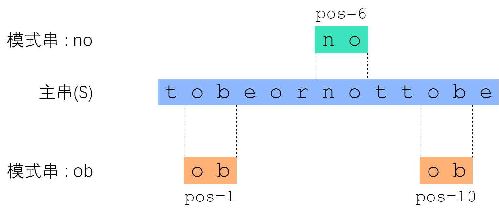
最容易想到的方法：Brute-Force
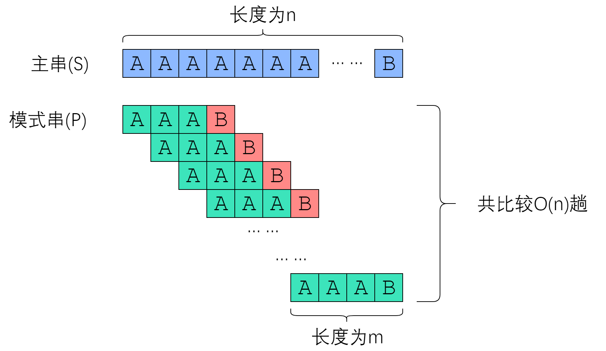
暴力法的时间复杂度是$O(|P|(|S|-|P|+1)) = O(|P||S|) = O(mn)$
KMP算法：
kmp算法就是尽量利用残余信息，不用逐个比字符串。其思路下面这个图就解释清楚了：
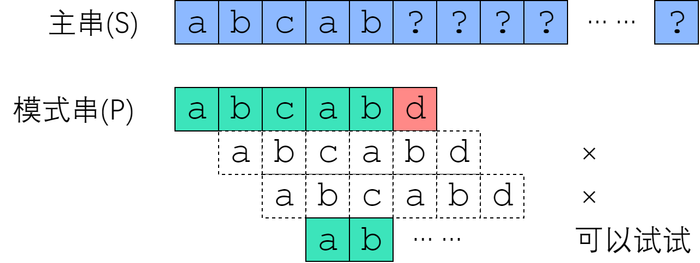
即我们可以不用一个一个往后挪这比较，而是往后挪好几个身位去比较。这个时候挪多少个位置呢？需要next数组去帮我们。
next数组中的值是字符串的前缀集合与后缀集合的交集中最长元素的长度。例如，对于”aba”，它的前缀集合为{”a”, ”ab”}，后缀 集合为{”ba”, ”a”}。两个集合的交集为{”a”}，那么长度最长的元素就是字符串”a”了，长 度为1，所以对于”aba”而言，它在PMT表中对应的值就是1。再比如，对于字符串”ababa”，它的前缀集合为{”a”, ”ab”, ”aba”, ”abab”}，它的后缀集合为{”baba”, ”aba”, ”ba”, ”a”}， 两个集合的交集为{”a”, ”aba”}，其中最长的元素为”aba”，长度为3。
最小生成树——Prim算法和Kruskal算法
这两种算法都是求最小生成树的，都是贪心算法的典型应用
-
Prim算法
图论中的一种算法，可以在加权连通图中搜索最小生成树。包括图中所有顶点之且所有边的权值之和最小
-
Kruskal算法
也是用来寻找最小生成树的算法
思路是将所有边的长度排序，然后
二叉查找树，二叉搜索树
它或者是一棵空树，或者是具有下列性质的二叉树： 若它的左子树不空，则左子树上所有结点的值均小于它的根结点的值； 若它的右子树不空，则右子树上所有结点的值均大于它的根结点的值；它的左、右子树也分别为二叉排序树。
AVL树（平衡二叉树）
AVL是一种高度平衡的二叉树，本质也是一颗二叉查找树，有以下两个特点：
- 它是一棵空树或它的左右两个子树的高度差的绝对值不超过1，
- 左右两个子树也都是一棵平衡二叉树。
这个方案很好的解决了二叉查找树退化成链表的问题，把插入，查找，删除的时间复杂度最好情况和最坏情况都维持在O(logN)。但是频繁旋转会使插入和删除牺牲掉O(logN)左右的时间，不过相对二叉查找树来说，时间上稳定了很多
AVL树主要的难点在于插入和删除
- 插入
| 插入位置 | 状态 | 操作 |
|---|---|---|
| 在结点T的左结点（L）的 左子树（L） 上做了插入元素 | 左左型 | 右旋 |
| 在结点T的左结点（L）的 右子树（R） 上做了插入元素 | 左右型 | 左右旋 |
| 在结点T的右结点（R）的 右子树（R） 上做了插入元素 | 右右型 | 左旋 |
| 在结点T的右结点（R）的 左子树（L） 上做了插入元素 | 右左型 | 右左旋 |
又回看了以便，其实插入位置为左左型和右右型的其实是一个东西，本质上都是一次旋转就行了，注意有个节点需要断开原先的连接
像左右型和右左型这种都需要两次旋转，但是这两次旋转本质上和一次旋转一模一样，所以说这四种插入位置其实本质上都差不多的。
字典树
-
什么是字典树？
字典树我愿意给他叫做单词查找树，利用字符串的公共前缀来降低查询时间进而提高效率。有以下三个性质：
- 根节点不包含字符，除根节点外每一个节点都只包含一个字符。
- 总根节点到某一个节点，路径上的字符连接起来为该节点对应的字符串。
- 每个节点所有子节点包含的字符都不同。
-
字典树的使用范围
-
词频统计
如果内存有限，hash表所占的空间很大，我们就可以用trie树来压缩下空间，因为公共前缀都是用一个节点保存的。
-
前缀匹配
-
2-3查找树
-
定义
相比于AVL树对平衡性的严格要求，2-3查找树相对灵活一些。这里面2-3查找树允许一个节点保存多个键。
通常我们将一棵标准的二叉查找树成为2-节点，因为每个节点都只有一个键（关键字）和两个链接
但是2-3查找树引入了3节点，表示一个节点中有两个关键字和三个节点。
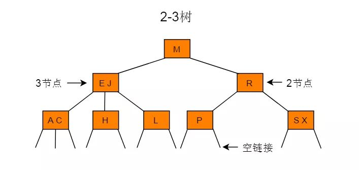
-
性质
- 任意一个节点都有1个或者2个关键码
- 当节点有1个关键码的时候，节点有2个子树
- 当节点有两个关键码的时候，节点有3个子树
- 所有叶子节点都在树的同一层
红黑树
线性查找 —性能低—>二分查找— 二查叉树会出现退化成链表的问题—>出现AVL平衡二叉树—数据变化有频繁更新节点问题(即AVL变态的平衡)—>出现红黑树
AVL树和红黑树都是由二叉树繁衍而来，这两个数有不同的适用条件：
- 如果有频繁的插入和删除的话，不要用AVL数，因为其变态的平衡要求
- 如果频繁的查找，但是插入和删除不多的话用AVL树的话是可以的
红黑树本质上也是一种二叉查找树，但是他是自平衡的，在插入和删除可能会破坏树的结构的情况下需要自行处理以达到平衡状态。
红黑树有以下特性：
- 每个节点不是黑色就是红色
- 根节点是黑色
- 如果一个节点为红色，则子节点必为黑色
- 任意一个节点到每个叶子节点的路径上都包含数量相同的黑节点（这个时候null节点不算进去）
- 每个叶子节点（NULL）都是黑色的。（红黑树吧null节点当做了叶子节点）
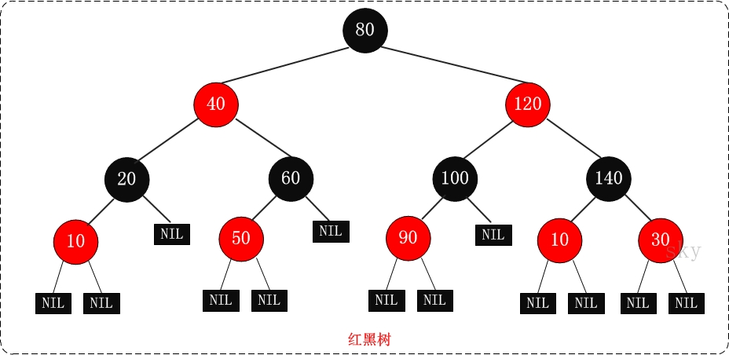
-
左旋和右旋
左旋和右旋是一个相对的概念，但是只要记住：对一个节点左旋的时候，意味着将这个节点变成左节点，如果这个节点是根节点的话，那么也变成左节点，他的右节点就是这个节点的根节点
1 2 3 4 5z x / / \ --(左旋)--> x y z / y右旋也是一样的，x节点变成右孩子节点，左旋就是变成左孩子节点。然后x节点的左孩子节点变成x节点的根节点
1 2 3 4 5y x \ / \ --(右旋)--> x y z \ z -
插入
-
删除
B-tree
对于树结构的查找来说，有以下几种：二叉查找树，平衡二叉查找树，红黑树，B-tree等等。对于二叉树来说，查找的为log2N，很明显和树的深度有关，因此在数据量特别大的时候，我们需要尽可能降低树的深度来提高查询效率。但是如果减少树的深度，那么每棵树上的节点数就会很多，这样还是退化到了对于节点的线性查找，可能时间复杂度还会增加，怼到线性的。因此我们想要降低树的深度就要采用多叉树结构。因此B树就是一个多叉树，为了降低磁盘频繁的查找操作而设计的。
B树也称B-树,它是一颗多路平衡查找树。二叉树我想大家都不陌生，其实，B树和后面讲到的B+树也是从最简单的二叉树变换而来的
B树有用度定义的，有用阶定义的。在这里我写的话就用阶的概念来定义，阶就是说这个树最多有多少个子节点数，用m表示。m取2的时候就表示我们的二叉树
**度数：**每个节点子节点的个数称为该树的度。
**阶数：**一个节点的子节点数目最大值。
用阶定义B数如下图：
- 根节点不是叶子节点至少要有两个子节点，非根节点至少有m/2个子节点，取上限。
- 有n个子节点的节点恰好包含n-1个关键字
- 每个节点中的关键字都是按照从小到大的顺序排列的，同时每个关键字的左子树中的关键字均小于它，右子树中的关键字均大于它。
- 所有叶子节点都在同一层中
下图所示就是一个阶为4的B树：
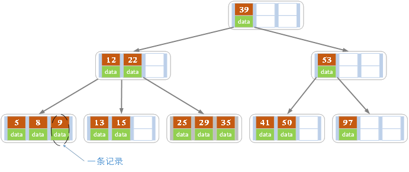
B+树的叶子节点内部结构如下图：
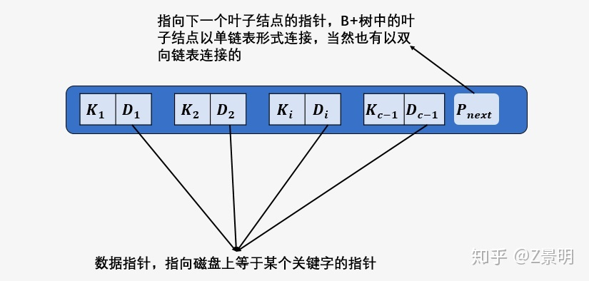
本质上说叶子节点存储的也不是数据，而是数据指针，指向磁盘中的数据。
通常在实际应用中B树的阶都很大，通常大于100。因此即使存储了大量的数据，B树的高度仍然比较小。每个结点中存储了关键字（key）和关键字对应的数据（data），以及孩子结点的指针。
-
查找
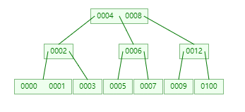
如上图所示，根据根节点004和008可得，有小于004，大于004小于008和大于008三种情况，分别对应三个子树，就这样查找如果树结构里面没有包含所要查找的节点则返回null，总体来说，B树的搜索流程跟普通二叉搜索树的搜索流程大体类似。
所以B树的查询并不稳定，根节点中关键字可能只需要1次IO操作，但是如果在叶子节点中可能需要树高度次磁盘IO操作
-
插入操作
-
树中已经存在当前的key，则更新value
-
若当前节点的关键字个数小于m-1，则正常插入
-
若加入key后当前节点的个数大于m-1， 则以当前节点中所有关键字的中间为基准点开始分裂，将基准点的key值放入到父节点（因为B数要求左边小于父节点，右边大于父节点），当前基准值的左子树都比他小，右子树都比他大。
举一个5阶树的列子：
-
未插入元素前：
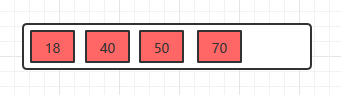
-
插入22后，图如下，就不满足5阶B树的定义了
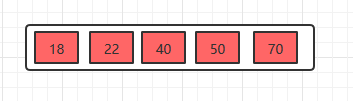
-
分裂中间基准点40
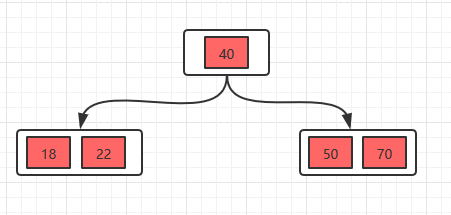
-
接着插入23，25，39，然后继续分裂，如下：
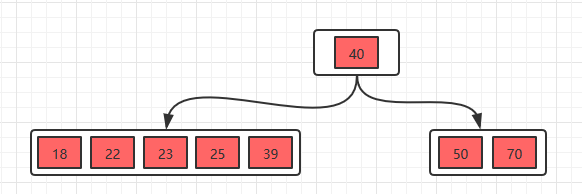
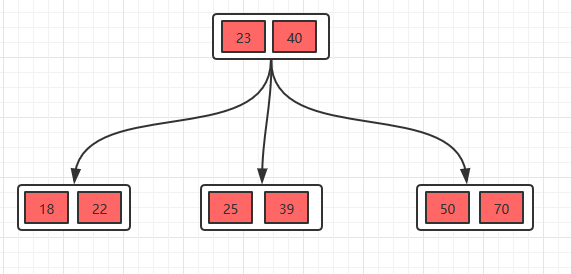
以上就是B树的插入过程。
-
-
-
删除操作
- 如果不存在对应的key，则删除失败
- 如果删除的是叶子节点中的关键字，则删除就行
- 若当前删除的key位于非叶子节点，则用key的后继节点替换当前要删除的节点，然后把这个后继节点删除（后继节点一定位于叶子节点上）。.
-
复杂度分析
具体分析看B+树中，我把B+和B树一起给分析了，这俩时间复杂度是一样的。
B+ Tree
B+树是b树的一种变体，广泛的用在存储引擎中。
和B树的相同点：
根节点不是叶子节点至少要有两个子节点，非根节点至少有m/2个子节点，取上限。
和B树的不同点：
- B+树有两种类型的节点：索引结点和叶子结点。索引节点就是非叶子节点，内部节点不存储数据，只存储索引（即key），数据都存储在叶子节点。
- 非叶子节点中，有n颗子树就包含n个key
- 非叶子节点中包含的是子树中最大或最小的key
- 所有叶子节点中包含了全部关键字的信息， 及指向含这些关键字记录的指针，且叶子节点本身依关键字的大小自小而大顺序链接；
如下图所示：
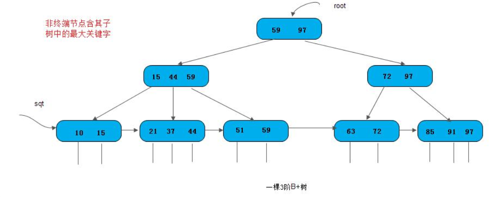
-
查找
查询单个元素

比如说查询元素59。第一次磁盘IO，访问根节点。然后发现59<=[59,97]，访问当前节点的第一个孩子节点。第二次磁盘IO，发现59>=[15,44,59]，访问当前节点的第三个孩子节点。第三次磁盘IO，访问叶子节点[51,59]，顺序遍历内部节点找到59
可以看到，B+树查找每个元素所用的磁盘IO数量一样
区间查询元素
区间查询的关键点在于叶子节点中，每个叶子节点都有一个指向下一个叶子节点的$P_{next}$指针。
为了更好地对比B树和B+树他们区间查询的优势，我先说一下B树的，查询21<=key<=63
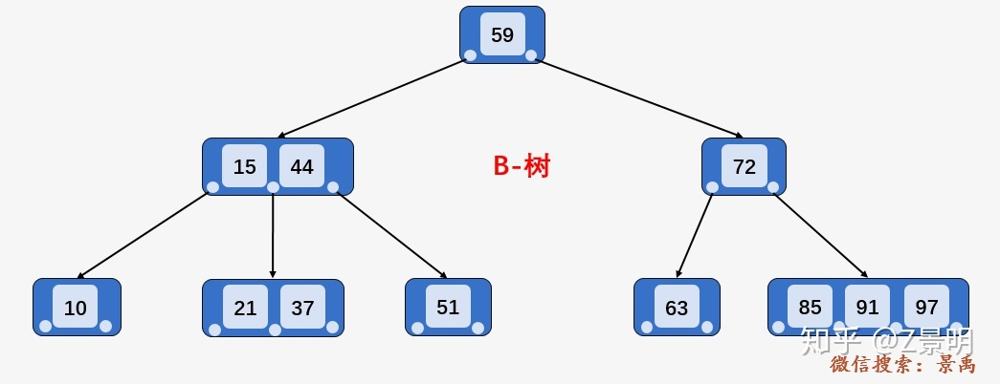
首先找到21所在的节点，上图中在叶子节点。然后从关键字21开始进行中序遍历，关键字依次为37、44、51、59、72、63。不考虑中序遍历过程的压栈和入栈操作，磁盘IO就多了两次(72、63)
再来看B+树的区间查找：
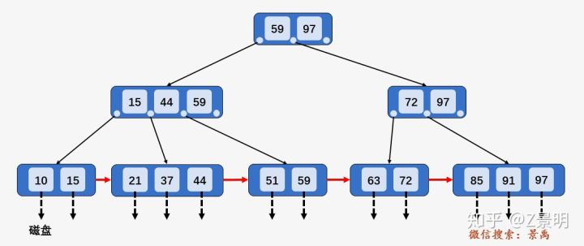
根据每个节点的索引找到叶子节点[21、37、44]后找到左端点21，接着不需要中序遍历，而是链表形式的遍历，从21找到63，没有任何额外的磁盘IO操作
-
插入
要注意一下几点：
- 插入的操作全部都在叶子结点上进行，且不能破坏关键字自小而大的顺序；
- 由于 B+树中各结点中存储的关键字的个数有明确的范围，做插入操作可能会出现结点中关键字个数超过阶数的情况，此时需要将该结点进行 “分裂”；
插入有三种情况：
- 若被插入关键字所在的结点，其含有关键字数目小于阶数 M，则直接插入；
-
若被插入关键字所在的结点，其含有关键字数目等于阶数 M，则需要将该结点分裂为两个结点，一个结点包含
⌊M/2⌋，另一个结点包含⌈M/2⌉。同时，将⌈M/2⌉的关键字上移至其双亲结点。假设其双亲结点中包含的关键字个数小于 M，则插入操作完成。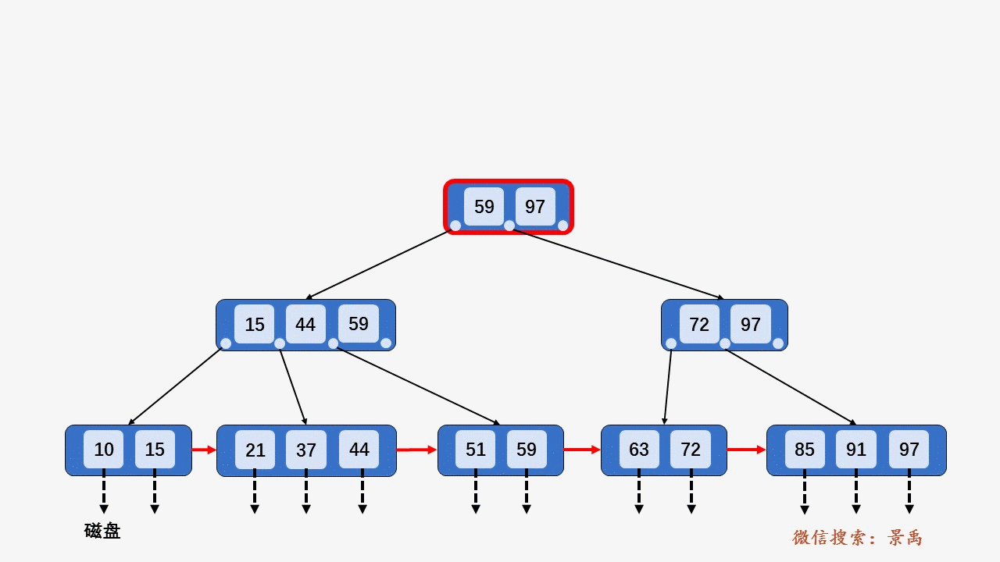
-
在第 2 情况中，如果上移操作导致其双亲结点中关键字个数大于 M，则应继续分裂其双亲结点。
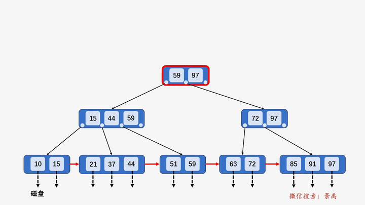
-
删除
- 删除该关键字，如果不破坏 B+树本身的性质，直接完成删除操作；
- 如果删除操作导致其该结点中最大（或最小）值改变，则应相应改动其父结点中的索引值；
- 在删除关键字后，如果导致其结点中关键字个数不足，有两种方法：一种是向兄弟结点去借，另外一种是同兄弟结点合并（情况 3、4 和 5）。（注意这两种方式有时需要更改其父结点中的索引值。）
-
复杂度分析
B+树 是 B-树的一个升级版本，在存储结构上的变化，由于磁盘页的大小限制，只能读取少量的B-树结点到内存中（因为B-树结点就带有数据，占用更多空间，所以说是 少量）；而B+树就不一样了。因为非叶子结点不带数据，能够一次性读取更多结点进去处理，所以对于同样的数据量， B+树更加 “矮胖”， 性能更好。但是两者在查找、插入和删除等操作的时间复杂度的量级是一致的，均为$O(log_mN)$，其中m是阶数，N是关键字个数
求查找时间复杂度也就是树的高度。对于B树和B+树来说，树的高度为h，一个节点存储m个关键字，有N个关键字，则满足$N=m^h$，所以$h=log_mN$。同时一个节点中包含的key数量是m，需要$O(m)$的时间复杂度，但是对这些节点key的遍历是放在内存中的，时间可以忽略，我们更加关注的是磁盘IO次数，即树的高度，所以B树和B+树两者在查找、插入和删除等操作的时间复杂度的量级是一致的，均为$O(log_mN)$，其中m是阶数，N是关键字个数
B树比B+树的优势在于：
- 如果经常访问的数据离根节点很近，而B树的非叶子节点存储关键字数据的地址，所以这种数据检索的时候会要比B+树快。
B+树比B树的优势在于：
- B+树查询速度更稳定：B+所有关键字数据地址都存在叶子节点上，所以每次查找的次数都相同所以查询速度要比B树更稳定;(logn)
- B+树天然具备排序功能：B+树所有的叶子节点数据构成了一个有序链表，查询区间数据时更方便，数据紧密性很高，缓存的命中率也会比B树高。
- B+树全节点遍历更快：B+树遍历整棵树只需要遍历所有的叶子节点即可，而不需要像B树一样需要对每一层进行遍历，这有利于数据库做全表扫描。
- 适合区间查询，需要的磁盘IO数少
一般在数据库系统或文件系统中使用的B+Tree结构都在经典B+Tree的基础上进行了优化，增加了顺序访问指针。
手撕LRU算法
LRU(Least Recently Used) 即最近最少使用，属于典型的内存淘汰机制。
根据数据的历史访问记录来进行淘汰数据，其核心思想是“如果数据最近被访问过，那么将来被访问的几率也更高”，其思路如下图所示：
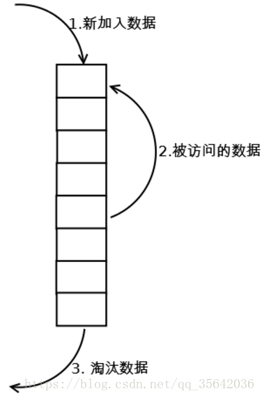
该算法需要达到两个目的：①可以轻易的更新最新的访问数据。②轻易的找出最近最少未使用的数据。所以要用到哈希表+双向链表实现。利用map，获取key对应的value是O(1)，利用双向链表，实现新增和删除都是O(1)。
传统意义的LRU算法是为每一个Cache对象设置一个计数器，每次Cache命中则给计数器+1，而Cache用完，需要淘汰旧内容，放置新内容时，就查看所有的计数器，并将最少使用的内容替换掉。它的弊端很明显，如果Cache的数量少，问题不会很大， 但是如果Cache的空间过大，达到10W或者100W以上，一旦需要淘汰，则需要遍历所有计数器，其性能与资源消耗是巨大的。效率也就非常的慢了。双链表LRU的原理： 将Cache的所有位置都用双链表连接起来，当一个位置被命中之后，就将通过调整链表的指向，将该位置调整到链表头的位置，新加入的Cache直接加到链表头中。 这样，在多次进行Cache操作后，最近被命中的，就会被向链表头方向移动，而没有命中的，则向链表后面移动，链表尾则表示最近最少使用的Cache。当需要替换内容时候，链表的最后位置就是最少被命中的位置，我们只需要淘汰链表最后的部分即可。
LRU数据结构如下图：

根据上图我们可以分析一下：
- 如果我们每次默认从链表尾部添加元素，那么显然越靠尾部的元素就是最近使用的，越靠头部的元素就是最久未使用的。
- 对于某一个
key，我们可以通过哈希表快速定位到链表中的节点，从而取得对应val。 - 链表显然是支持在任意位置快速插入和删除的，改改指针就行。只不过传统的链表无法按照索引快速访问某一个位置的元素，而这里借助哈希表，可以通过
key快速映射到任意一个链表节点，然后进行插入和删除。
-
版本1：自己实现循环链表存储，没有用API
1 2 3 4 5 6 7 8 9 10 11 12 13 14 15 16 17 18 19 20 21 22 23 24 25 26 27 28 29 30 31 32 33 34 35 36 37 38 39 40 41 42 43 44 45 46 47 48 49 50 51 52 53 54 55 56 57 58 59 60 61 62 63 64 65 66 67 68 69 70 71 72 73 74 75 76 77 78 79 80 81 82 83 84 85 86 87 88 89 90 91 92 93 94 95 96 97 98 99 100 101 102 103 104 105 106 107 108 109 110 111 112/********************不用API的版本*************************/ /********************简单说一下思路*************************/ //1.首先hash表用的是unordered_map来实现，用来查找key对应的node节点，所以hash表应该是[key,node]形式存储 //2.LRUCache这个类实现双向链表的添加，删除，更新和遍历 //3.同时这个类还要实现get和put两个功能 //4.我这里用的是循环双向链表，因此查找链表尾端的元素为O(1)，正常的双向链表是O(n) //总结：最重要的就是hash表中的key对应的不是int而是一个node节点，这个要记住 #include<unordered_map> #include<iostream> struct Node{ int key; int value; Node* pre; Node* next; Node(){} Node(int k, int v):key(k), value(v), pre(nullptr), next(nullptr){} }; class LRUCache{ private: //通过key可以找到位于链表中的节点 std::unordered_map<int, Node*> hash; int capacity; Node* head_node; public: LRUCache(int cap){ capacity = cap; head_node = new Node(); //初始化dummy_Node,next和pre都指向自己 head_node->next = head_node->pre = head_node; } //将新来的插入双向链表头部 void add_Node(Node* n); //将某个节点拿出来重新插入头部 void update_Node(Node* n); //移除链表中最后一个（最久未使用） void pop_back(); //输出LRU结构 void show(); int get(int key); void put(int key, int value); }; //注意，该节点可能是新节点，也可能是已经存在的有重新入链表的节点 void LRUCache::add_Node(Node* n){ //表示当前节点n就是dummy的next节点，不用加入 if(n->pre == head_node){ return; } //将节点n插入head_node后面 n->pre = head_node; n->next = head_node->next; head_node->next->pre = n; head_node->next = n; } void LRUCache::update_Node(Node* n){ //表示当前节点n就是dummy的next节点，不用断掉 if(n->pre == head_node){ return; } n->next->pre = n->pre; n->pre->next = n->next; add_Node(n); } //弹出链表的最后一个，由于是循环链表，就是head_node->pre void LRUCache::pop_back(){ Node* tmp = head_node->pre; head_node->pre = tmp->pre; tmp->pre->next = head_node; //删除unordered_map中的key hash.erase(tmp->key); } void LRUCache::show(){ //链表中没有节点，退出 if(head_node->next = head_node){ return; } Node* tmp = head_node->next; while(tmp->next != head_node){ std::cout<<"key:"<<tmp->key<<",vlaue:"<<tmp->value<<std::endl; } } int LRUCache::get(int key){ auto it = hash.find(key); if(it == hash.end()){ std::cout<<"there is no key"<<std::endl; return -1; } //取出key对应的node节点 Node* node = it->second; update_Node(node); return node->value; } void LRUCache::put(int key, int value){ auto it = hash.find(key); if(it == hash.end()){ Node* node = new Node(key, value); add_Node(node); hash.insert({key, node}); if(hash.size() > capacity){ pop_back(); } }else{ it->second->value = value; update_Node(it->second); } } -
版本2：使用deque，为什么使用deque说的很清楚
1 2 3 4 5 6 7 8 9 10 11 12 13 14 15 16 17 18 19 20 21 22 23 24 25 26 27 28 29 30 31 32 33 34 35 36 37 38 39 40 41 42 43 44 45 46 47 48 49 50 51 52 53 54 55/****************注意unordered_map的插入************/ #include <iostream> #include <deque> #include <unordered_map> #include <list> class LRUCache{ private: int capacity; //1.之所以用deque不用list是因为移除尾部元素的时候，deque方便 //2.deque里面可以存储自定的node类型，也可以用pair表示，这里我用pair了 std::deque<std::pair<int, int>> my_deque; //通过key找到对应key在deque中的位置 std::unordered_map<int, std::deque<std::pair<int, int>>::iterator> hash; public: LRUCache(int cap):capacity(cap){} int get(int key); void put(int key, int value); }; int LRUCache::get(int key){ if(hash.find(key) == hash.end()){ std::cout<<"there is no key"<<std::endl; return -1; } std::pair<int, int> tmp = *hash[key]; my_deque.erase(hash[key]); my_deque.push_front(tmp); //更新hash表中对应key位于deque的位置 hash[key] = my_deque.begin(); return tmp.second; } void LRUCache::put(int key, int value){ if(hash.find(key) == hash.end()){ if(my_deque.size() >= capacity){ //把hash表中的抹除，然后删除deque中的 auto it = my_deque.back(); hash.erase(it.first); my_deque.pop_back(); my_deque.push_front({key, value}); hash.insert({key, my_deque.begin()}); }else{ my_deque.push_front({key, value}); hash.insert({key, my_deque.begin()}); } }else{ //更新就行 my_deque.erase(hash[key]); my_deque.push_front({key, value}); //更新hash表中key的位置 hash[key] = my_deque.begin(); } }
线性对数级排序算法详解（重要！）
快速排序
-
快排基本概念
快速排序用的是分治的思想，即通过选取一个pivot将数组分成两个子数组A和B，子数组A中的元素均小于等于pivot，子数组B中的元素均大于等于pivot中的元素。这个时候对于两个子数组A和B而言，每一个子数组又是一个数组需要选取一个pivot进行排序，这就是递归的思想。
因此对于快速排序来说主要由两部分组成：第一部分是获取pivot的
partition函数和进行快排递归的quicksort函数1 2 3 4 5 6 7 8 9 10 11 12 13 14 15 16 17 18 19 20 21 22 23 24 25 26 27 28 29 30 31 32 33 34 35 36 37 38 39 40 41 42 43 44 45 46//这个函数主要是求pivot的 int partition(int *a, int left, int right){ //首先要随机选取一个pivot，这样做是为了根据pivot分成两个子数组数组。一下三种选择方式均可以 int pivot = a[left]; int pivot = a[right]; int pivot = a[left + (right - left) / 2];//这样做是为了防止数组越界 int pivot_index = left/right/left + (right - left) / 2 //两个指针移动，当同时指到一个元素时候就退出循环 //切记，必须从右边开始找！！！！ while(left < right){ while(a[right] >= pivot && left < right){ right--; } while(a[left] <= pivot && left < right){ left++; } if(left < right){ swap(a[left], a[right]); } } //这一步是为了将选取的pivot值放在中间，保证左边的子数组均比pivot小，右边的子数组均比pivot大 //这一步也是交换元素,交换选取pivot的索引和left的索引所对应的值 a[povit_index] = a[left]; a[left] = povit; return left; /*优化的写法：： int pivot = a[left]; while(left<right){ while(left<right&&a[right]<=pivot)right--; a[left] = a[right]; while(left<right&&a[left]>=pivot)left++; a[right] = a[left]; } a[left] = pivot; return left; */ } void quicksort(int *a, int left, int right){ //边界条件判断 if(left >= right){ return; } int pivot = partition(); quicksort(a, left, pivot - 1); quicksort(a, pivot +1, right); }**总结：**对上面代码，写的时候有几个地方需要注意：
- 在写内循环的时候，一定要先从右边开始写！！切记！！
- 当子数组中有小于pivot的时候和有大于pivot的时候，这个时候交换是正常的，将大小对调位置。但是，，我们最后退出大循环也要交换一次，这次交换是为了划分两个子数组，一个比pivot小，一个比pivot大。
-
性能分析
对于每一个数组，数值中的每一个元素都和一个定值进行比较，这样表明内循环很简洁。
-
时间复杂度
平均情况 最坏情况 最好情况 $O(nlog_2n)$ $O(n^2)$ $O(nlog_2n)$ 对于快速排序算法来说最理想的情况时partition函数能做到最平衡的划分，即每次选取的pivot值都能将数组对半分，这样划分到最后使得每个部分只包含一个或者零个元素。但是缺点也很明显，即在划分函数partition极度不平衡的时候效率会很低。比如说第一次选取的pivot是最小元素，第二次选取的pivot是第二小的元素等等，这样会导致一个大数组切分n-1次。
-
空间复杂度
平均情况 最坏情况 最好情况 $O(log_2n)$ $O(n)$ $O(log_2(n+1))$ 快速排序用到了递归，可以发现最好情况或者平均情况，将待排序数组每次对半分是最好的，这样的话就是logn，但是最坏的情况就是12345这种类型，基本上每次都要调栈，调大概n-1次。
-
稳定性
想一种情况，比如递增排序，右边有两个相同元素均小于pivot，这个时候调换到左边后相对位置会发生变化。所以是不稳定的。
-
-
改进算法
-
切换到插入排序
对于小数组来说，插入排序要比快速排序效率高，因为当数组比较小的时候还是会递归。所以当递归划分的子数组较小的时候可以使用插入排序来进行。或者直接用宏排序来写。
-
选取pivot的时候更优。一种选取方法是取前三个值的平均值，这样保证pivot比较均匀从统计学概率上来讲。或者选取中位数。
-
-
快速排序题目
-
归并排序
-
归并排序基本概念
刚才讲了快速排序，这次讲解归并排序，主要思考他们两个思想有什么不同。
归并排序也是采用分治的思想实现的，分即将大问题分成一些小问题递归或者迭代求解，治则是指将分阶段得到的解决答案缝缝补补的合并在一起，这样就将大问题小问题话。
其实分治算法的思想用一张图就可以概括清楚：

可以看到分的过程是均分，这样的话分和治的过程都像是一个二叉树形状，那么求最底下一层即叶子节点，就是logn。
接下来主要分析治的阶段：
治的阶段本质上要解决的问题是将两个已经有序的子序列合并成一个有序序列

从上图中可以看到治的思想是对于两个子数组而言的，用两个指针的思想。看图就行了，不想细说了。
-
代码实现
代码分为两部分，merge和mergesort
1 2 3 4 5 6 7 8 9 10 11 12 13 14 15 16 17 18 19 20 21 22 23 24 25 26 27 28 29 30 31void merge(vector<int>& vec, vector<int>& tmp1, vector<int>& tmp2){ int len1 = tmp1.size(); int len2 = tmp2.size(); int p1 = 0; int p2 = 0; while(p1 < len1 && p2 < len2){ if(tmp1[p1] <tmp2[p2]){ vec.push_back(tmp1[p1++]); }else{ vec.push_back(tmp2[p2++]); } } while(p1 <len1){ vec.push_back(tmp1[p1++]); } while(p2 < len2){ vec.push_back(tmp2[p2++]); } } void mergesort(vector<int>& vec){ if(vec.size() <= 1){ return; } auto mid = vec.begin() + vec.size()/2; vector<int> tmp1(vec.begin(), mid); vector<int> tmp2(mid, vec.end()); mergesort(tmp1); mergesort(tmp2); vec.clear(); merge(vec, tmp1, tmp2); } -
性能分析
从上述算法示意图可以看出，在分的过程中类似于完全二叉树的，因此可以利用二叉树的特性的思想性能都不会太差。在分的时候算法的时间复杂度是lgN，而在治的时候由于需要指针一次比对，因此时间复杂度是O(N)，因此总体时间复杂度是O(NlgN)。
归并排序最吸引人的性质是他能够将任意长度为N的数组排序所需要的时间和NlgN成正比(注：任何基于比较的算法的时间复杂度都是lg(N!)到NlgN的)，但缺点也很明显，在治的过程中需要额外的空间和N成正比。
归并排序分为自顶向下和自底向上两种模式。上图中我们看到的是最容易理解的即自顶向下的方式。当然，自底向上形式的归并排序比较适合链表这种数据结构，因为将链表按照长度为1的子链进行排序的时候，然后按照长度为2的子链进行排序的时候，按照长度为4的子链进行排序的时候，这样做不用创建新的链表节点就能将链表进行排序。
归并排序是一种渐进最优的基于比较排序的算法。因为归并排序在最坏的情况下的比较次数和任意基于比较的排序算法所需的最少比较次数都是NlgN。
下列表格是快排和归并排序在时间复杂度上的比较：

-
稳定性
归并排序是稳定排序。
堆排序
-
堆排序的基本概念
首先要明确的是堆是一种树形结构，这种树形结构有两个重要特征：
- 堆是一个完全二叉树
- 堆中每一个节点的值都大于或等于其子树中每个节点的值
其实堆排序是由优先队列这个概念而来的，将优先队列变成一种排序方法也很简单，即将所有元素插入一个查找最小元素或最大元素的优先队列中，然后在重复调用删除最小元素或最大元素的操作将他们排序即可
堆排序可以分为两个阶段：
-
堆的构造阶段。不借助额外空间，将数组原地建成一个堆。
如果用指针来表示堆有序的二叉树，需要三个指针，两个子节点和他的父节点
如果用指针来表示堆有序的完全二叉树，则需要两个指针就行，因为根节点固定，其子节点也就固定了
但一般用数组表示也很方便，因为堆有序的完全二叉树在数组中时层级表示的：（第一个元素索引为0的时候）索引为k的节点，其父节点为
floor[(k-1)/2]，两个子节点的索引分别为2k+1和2k+2建堆的时候有两种思路：
-
第一种是一次插入一个元素然后组成一个堆。这里我们都用最大堆来表示。可以想一下，假如堆中有一个元素了，那么第二个元素就会在第一个元素的下面，从下往上依次排序，这就叫做从下往上堆化。这样的话不高效，需要从左往右把数组遍历一遍才行。（这种也是最基本的构建堆的方案吧，但是肯定不用，效率太低了）
-
第二种是这样的。对于一个n长度数组准备构建堆，我们从j=(n-1)/2的地方开始组建我们只需要扫描数组中一半的元素，因此第一半的那个索引正好对应两个根节点。这个链接说的很详细
比如下图i=4开始构建，正常的思路是i=0开始，但是这样我们得遍历整个数组，这是没必要的。因为堆是一种完全二叉树，所以我们只需要遍历一半就能知道所有的数组值，所以i=4是从i=n/2-1得来的
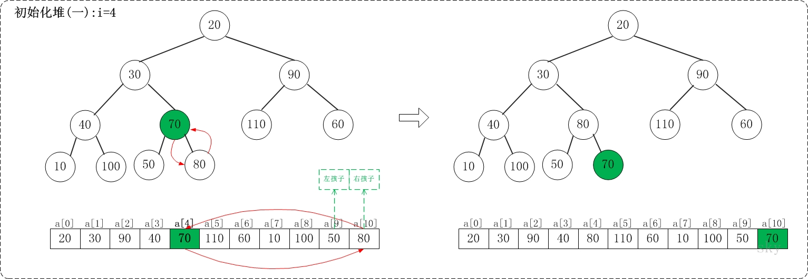
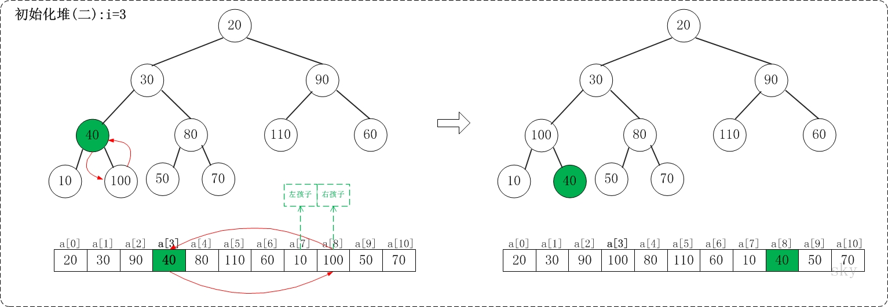
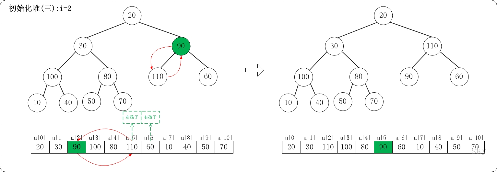
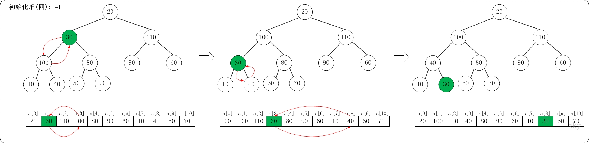
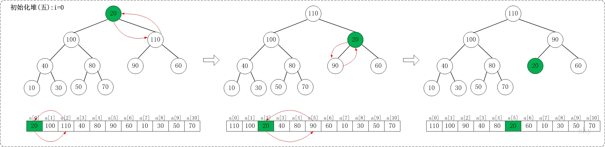
-
-
下沉排序阶段或上升排序阶段。从下往上的堆化叫做下沉又叫做sink()，而从下往上的堆化叫做上升又叫做swim()。
到这个阶段说明大顶堆或者小顶堆已经构建好了，可以排序了。我们把堆顶元素删除（这里模拟大顶堆），然后从数组的尾部补一个数，重新sink()排序就OK了。这样每次删除一个值就会从新排一次堆，知道按照从小到到的顺序让数组有序。
-
堆排序的分析
首先要知道几个命题：
创建堆的过程中N个元素至少需要2N次比较以及少于N次的交换。
将N个元素排序，堆排序只需要少于2NlgN+2N次比较。其中2N来自于N的构造。
-
时间复杂度
如果待排序中有N个数，遍历一趟的时间复杂度是O(N)。由于完全二叉树的提醒，遍历的次数就是树的深度，在lg(N+1)到lg(2N)之间，因此时间复杂度为O(NlgN)
-
稳定性
堆排序是不稳定算法。在交换数据的时候比较的是父节点和子节点之间的数据，如果存在两个值相等的兄弟节点，他们之间的顺序也可能在排序之后发生变化。
-
-
堆排序的一些额外的拓展
要知道，堆排序是唯一同时能够最优的利用时间和空间的排序方法，最坏的情况下也能保证线性对数的时间复杂性和恒定的空间
但是实际开发中，快排要比堆排序的性能好，有以下几点：
- 堆排序数据访问的方式没有快排合并排序那么友好。对于快排和合并排序来说我们的数据时顺序访问的，而对于堆排序来说我们是跳着访问的，无法实现局部顺序访问，因此无法利用缓存。
- 对于同样的数据，在堆排序过程中数据交换的次数要多于快排。对于基于比较的算法来说，排序的过程基本由两部分组成即比较和交换。堆排序第一步是建堆，因此可能会打乱数据原有的顺序造成数据有序度降低，进而增加很多比较次数。
但是，堆排序在空间利用十分紧张的地方比如嵌入式系统或者低成本的移动设备中很流行。
-
代码实现
代码有如下几部分：
heap_build建堆heap_sort堆排序，其中堆排序中调用建堆的API- 在堆排序函数中，每次要交换堆顶值和最后一个值，也就是数组的第一个和数组的最后一个，这样就可以升序排序
在构建堆的时候我们可以有递归和非递归的方式
1 2 3 4 5 6 7 8 9 10 11 12 13 14 15 16 17 18 19 20 21 22 23 24 25 26 27 28 29 30void heap_bulid(vector<int>& vec, int root, int len) int left_child = root*2 + 1； int righ_child = root*2 + 2； int max_root = root; if(left_child < len && vec[left_child] > vec[max_root]){ max_root = left; } if(right_child < len && vec[right_child] > vec[max_root]){ max_root = right; } //如果最大值的节点不是原先的父节点，表示需要 if(max_root != root){ swap(vec[root], vec[max_root]); heap_bulid(vec, max_root, len); } } void heap_sort(vector<int>& vec){ //从右到左sink()方式构造堆，右指的不是最右边，而是从中间向左逼近 int len = vec.size(); //从最后一个节点的父节点开始调整 for(int i = len / 2 - 1; i >=0; i++){ heap_bulid(vec, i, len); } //构建完后开始排序 for(int j = len - 1; j > 0; j--){ swap(vec[0], vec[j]); //交换完后从新建堆,这个堆的长度就要减去被移除(堆顶的那个)的最大元素之后的长度，所以长度不断变化，必须参数要带上长度 heap_build(vec, 0, j); } } -
了解优先队列。
-
跟堆有关的题目
问：编写算法，从10亿个浮点数当中，选出其中最大的10000个。
答：典型的Top K问题，用堆是最典型的思路。建10000个数的小顶堆，然后将10亿个数依次读取，大于堆顶，则替换堆顶，做一次堆调整。结束之后，小顶堆中存放的数即为所求。
问：设计一个数据结构，其中包含两个函数，1.插入一个数字，2.获得中数。并估计时间复杂度。 使用大顶堆和小顶堆存储。
答：使用大顶堆存储较小的一半数字，使用小顶堆存储较大的一半数字。插入数字时，在O(logn)时间内将该数字插入到对应的堆当中，并适当移动根节点以保持两个堆数字相等（或相差1）。获取中数时，在O(1)时间内找到中数。
为什么都在用快排而不是归并，堆？
问：我们知道，快排平均复杂度为nlogn，最坏时间复杂度为$n^2$，而归并排序最坏才是nlogn。那么为什么还是用快排多，用归并少呢？
我觉得原因有以下几个：
-
首先了解O的含义，即O(nlgon)的O。大O符号又称为渐进符号，在数学上表示一个函数的渐进行为的符号，描述一个函数数量级的渐进下界，不考虑首项系数和低阶项。比如说有一个规模n的算法花费时间$T(n)=n^2+2n+c$，可以看到当n增大的时候$n^2$开始占据主导地位，因此$O(n)=n^2$。在实际的生产生活中我们所用的n并没有达到那么大的规模，因此这个2n+c这个点是不可以忽略的。
-
快速排序一般是原地排序，不需要创建任何的辅助数组来保存临时变量。而归并排序需要用到两个额外的数组进行存储，同时将数组合并成为一个也会花费点时间。
-
就常数项来说，快排< 归并 < 堆
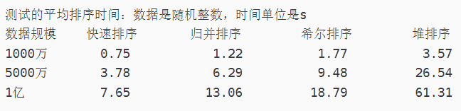
问：什么场景下用归并比用快排好？
当对连链表结构进行排序的时候，归并排序比快排高效。因为链表的存储空间时分散的，必须到每个节点的地址再连接起来，这就导致快排依靠数组的优势不存在了。同时归并使用链表结构的话，直接连接就行，不需要额外的辅助空间。
插入排序
147,148
优先队列
-
概念
在做堆排序的时候才知道这个堆排序的思想是从优先队列里面来的。
优先队列是一种抽象类型的数据结构，他的特征是：
-
队列中的每个元素都有各自的优先级，优先级高的先得到服务或者先处理
-
支持删除优先级高的元素，插入新元素
来看一看线性结构和堆来取优先级最高的元素的时间复杂度比较：
数据结构 入队 出队 普通线性结构 O(1) O(n) 顺序线性结构 O(n) O(1) 堆 O(lgn) O(lgn) 可以看到当时用堆这种数据结构的时候是比较高效的。
-
-
优先队列和堆的区别
这里面堆特指二叉堆。
二叉堆只是有点队列实现的一种方式。除此之外优先队列还有二项堆,配对堆,左偏树,斐波那契堆,平衡树，线段树，甚至是二进制分组的vector来实现一个优先队列等等。
-
代码实现
1 2 3 4 5 6 7 8 9 10 11 12 13 14 15 16 17 18 19 20 21 22 23 24 25 26 27 28 29 30 31 32 33 34 35 36class Priority_queue { public: Priority_queue(int max_num) { int *a = new int[max_num]; a = { 0 }; } ~Priority_queue() { delete[] a; } void Insert(int num) ; bool delete_max(); void build_max_heap(int *a, int length); int max_num(); void sort(); private: int capacity; int len; int *a; }; void Priority_queue::build_max_heap(int *a, int length) { } int Priority_queue::max_num() { } bool Priority_queue::delete_max() { } void Priority_queue::Insert(int num) { } void Priority_queue::sort() { }
二分查找
二分查找算法的前提是数组时有序的，同时不能有重复元素。
二分查找难点就在于对区间的定义。区间的定义一般分为两种：左闭右闭[left, right]和左闭右开[left, right)
最重要的一点是：二分查找一般不仅仅用来查找某一个位置上的值，同时更多的是用来查找某一个范围。比如一个有序的重复数组，查找第k个等于target的值，其实本质上都是借用了二分查找的思想，只是变体不同而已，所以把二分查找好好学就行。
在知乎上看到的非常有启发的一句话：
二分查找的过程就是一个 维护 low 的过程：low指针从0开始，只在中位数遇到确定小于目标数时才前进，并且永不后退。low一直在朝着第一个目标数的位置在逼近。直到最终到达。
基本的二分搜索
左闭右闭[left, right]
- 左闭右闭[left, right]即 right = nums.length - 1
- while(left <= right)要使用小于等于，因为left==right是有意义的。
- if(nums[middle] > target)这个时候right=middle-1，因为当前这个nums[middle]一定不是target，所以肯定往左边查。
|
|
左闭右开[left, right)
- 左闭右开[left, right)即right = nums.length
- while(left < right) 因为left=right是没有意义的
- if(nums[middle] > target 的时候应该去左边找，由于是左闭右开的，因此right=middle
|
|
边界的二分搜索
之前的都是在数组中找到一个数要与目标相等，如果不存在则返回-1。我们也可以用二分查找法找寻边界值，也就是说在有序数组中找到“正好大于（小于）目标数”的那个数。
比如说给有序数组 nums = [1,2,2,2,3]，target 为 2，此算法返回的索引是 2，没错。但是如果我想得到 target 的左侧边界，即索引 1，或者我想得到 target 的右侧边界，即索引 3，这样的话此算法是无法处理的。
最直观的方法就是找到target然后线性向左向右搜索，但是当数据量很大的时候，很难保证二分查找的复杂度，
因此总结了左侧和右侧边界的二分搜索
对于边界搜索的话使用左闭右开比较普遍
左侧边界
左侧边界又可以理解为小于某个数有几个
-
左闭右开写法
1 2 3 4 5 6 7 8 9 10 11 12 13 14 15 16 17 18int left_bound(vector<int>& nums, int target) { if (nums.length == 0) return -1; int left = 0; int right = nums.length(); // 注意 while (left < right) { // 注意 int mid = left + (right -left) / 2; if (nums[mid] < target) { left = mid + 1; //没问题 } else{ right = mid; //这个有点意思，找到target不返回而是继续缩小边界，不断锁定左侧，最终会出现left=right } } //检查出界情况 if (left >= nums.length || nums[left] != target) return -1; return left; } -
左闭右闭写法
1 2 3 4 5 6 7 8 9 10 11 12 13 14 15 16 17 18 19 20 21int left_bound(int[] nums, int target) { int left = 0, right = nums.length - 1; // 搜索区间为 [left, right] while (left <= right) { int mid = left + (right - left) / 2; if (nums[mid] < target) { // 搜索区间变为 [mid+1, right] left = mid + 1; } else if (nums[mid] > target) { // 搜索区间变为 [left, mid-1] right = mid - 1; } else if (nums[mid] == target) { // 收缩右侧边界 right = mid - 1; } } // 检查出界情况 if (left >= nums.length || nums[left] != target) return -1; return left; }
可以看到当nums[mid] == target的时候，让mid这个位置变成了right重新开始查找。
数组越界的判断条件是指当left大于数组长度时候，肯定是错的。或者逼近的left位置上的值不等于target，说明就没有。
右侧边界
同理右侧边界可以理解为大于某个数有几个
-
左闭右开
1 2 3 4 5 6 7 8 9 10 11 12 13 14 15 16 17 18int right_bound(vector<int>& nums, int target) { if (nums.length == 0) return -1; int left = 0; int right = nums.length(); // 注意 while (left < right) { // 注意 int mid = left + (right -left) / 2; if (nums[mid] < target) { left = mid ; //没问题 } else{ right = mid - 1; } } //检查出界情况 if (right >= nums.length || nums[left] != target) return -1; return right; }
c++二分查找API
二分查找的函数有3个：
int lower_bound(起始地址，结束地址，要查找的数值) 返回的是数值 第一个等于某元素 的位置。
int upper_bound(起始地址，结束地址，要查找的数值) 返回的是数值 第一个大于某个元素 的位置。
bool binary_search(起始地址，结束地址，要查找的数值) 返回的是 是否存在 这么一个数，是一个bool值。
-
函数lower_bound()
功能：函数lower_bound()在first和last中的前闭后开区间进行二分查找，返回大于或等于val的第一个元素位置。如果所有元素都小于val，则返回last的位置，因为是前闭后开因此这个时候的last会越界，要注意。
-
函数upper_bound()
功能：函数upper_bound()返回的在前闭后开区间查找的关键字的上界，返回大于val的第一个元素位置。注意：返回查找元素的最后一个可安插位置，也就是“元素值>查找值”的第一个元素的位置。同样，如果val大于数组中全部元素，返回的是last。(注意：数组下标越界)
-
函数binary_search()
功能： 在数组中以二分法检索的方式查找，若在数组(要求数组元素非递减)中查找到indx元素则真，若查找不到则返回值为假。
跳表
求根号2
二分法
Topk两种方法
快排
快排的思路：首先看是求前k个最大的还是前k个最小的值，然后去找flag的左边或者右边。然后呢前k个，则数组的下标和k对比，如果不相等就看下标和k哪个大哪个小。如果index<k，则说明要往右边找，否则网往边找。
算法的平均复杂度是O(n)，最坏的情况是O($n^2$)，这种情况是集合已经排好序了。
时间复杂度计算方法：每次分割后的数组大小近似为原数组大小的一半，因此这种方法的时间复杂度实际上是O(N)+O(N/2)+O(N/4)+……＜O(2N)，因此时间复杂度为O(N)，但是这种方法需要提前将N个数读入，对于海量数据来说，对空间开销很大（缺点）
|
|
堆
小顶堆，最上面是最小的，求前k个最大的
大顶堆，最上面是最大的，求前k个最小的
构建思路：先随机取出N个数中的K个数，将这N个数构造为小顶堆，那么堆顶的数肯定就是这K个数中最小的数了。然后再将剩下的N-K个数与堆顶进行比较，如果大于堆顶，那么说明该数有机会成为TopK，就更新堆顶为该数，此时由于小顶堆的性质可能被破坏，就还需要调整堆
复杂度分析： 首先需要对K个元素进行建堆，时间复杂度为O(k)，然后要遍历数组,最坏的情况是，每个元素都与堆顶比较并排序，需要堆化n次 所以是O(nlog(k))，因此总复杂度是O(nlog(k));
堆排序的优势：通过对比可以发现，堆排的优势是只需读入K个数据即可，可以实现来一个数据更新一次，能够很好的实现数据动态读入并找出
海量数据情况下
比如：10亿个数中找出最大的10000个数，因为数据太大没办法全部装入内存，所以需要别的办法。
基本：最小堆，10000个数建堆，然后一次添加剩余元素，如果大于堆顶的数（10000中最小的），将这个数替换堆顶，并调整结构使之仍然是一个最小堆，这样，遍历完后，堆中的10000个数就是所需的最大的10000个。建堆时间复杂度是O（nlogn），算法的时间复杂度为O（nklogn）（n为10亿，k为10000）。
优化的方法：可以把所有10亿个数据分组存放，比如分别放在1000个文件中。这样处理就可以分别在每个文件的10^6个数据中找出最大的10000个数，合并到一起在再找出最终的结果。
快排改成稳定排序
单向链表和双向链表的区别，分别的场景
哈希表
散列表（Hash table，也叫哈希表），是根据关键码值(Key value)而直接进行访问的数据结构。也就是说，它通过把关键码值映射到表中一个位置来访问记录，以加快查找的速度（以时间换空间的思想）。这个映射函数叫做散列函数，存放记录的数组叫做散列表。 散列函数能使对一个数据序列的访问过程更加迅速有效，通过散列函数，数据元素将被更快地定位。
常见的常见的散列函数
-
直接寻址法
取关键字或关键字的某个线性函数值为散列地址
-
平方取中法
当无法确定关键字中哪几位分布较均匀时，可以先求出关键字的平方值，然后按需要取平方值的中间几位作为哈希地址
-
随机数法
择一随机函数，取关键字的随机值作为散列地址，通常用于关键字长度不等的场合
-
除留余数法
取余，取关键字被某个不大于散列表表长m的数p除后所得的余数为散列地址。即 H(key) = key % p, p <= m
怎么解决哈希冲突
-
开放寻址法
当发生哈希冲突后，就去寻找下一个空的散列地址，只要散列表足够大，这个空的位置一定能找到
-
再散列法
当散列表元素太多（即装填因子 α 太大）时，查找效率会下降；当装填因子过大时，解决的方法是加倍扩大散列表，这个过程叫做“再散列（Rehashing）”。Hash 表中每次发现 loadFactor==1 时，就开辟一个原来桶数组的两倍空间（称为新桶数组），然后把原来的桶数组中元素全部转移过来到新的桶数组中。注意这里转移是需要元素一个个重新哈希到新桶中的。实用最大装填因子一般取 0.5 <= α<= 0.85
-
链地址法
当发生冲突时，该位置上的数据会用链表链起来，当表中的某些位置没有结点时，该位置就为 NULL。但是当数据特别大时候，可能链表也很长，查找变成O(n)
优化：使用红黑树等树形结构来存储，但是要注意红黑树有排序，需要自定义排序算法。
-
公共溢出区
为所有冲突的关键字记录建立一个公共的溢出区来存放。在查找时，对给定关键字通过散列函数计算出散列地址后，先与基本表的相应位置进行比对，如果相等，则查找成功；如果不相等，则到溢出表进行顺序查找。如果相对于基本表而言，在有冲突的数据很少的情况下，公共溢出区的结构对查找性能来说还是非常高的。
Hash表的扩容
什么时候扩容？
当向容器添加元素的时候，会判断当前容器的元素个数，如果大于等于阈值(即当前数组的长度乘以加载因子的值的时候)，就要自动扩容了。
扩容
在hash表的实现中，我们一般会控制一个装载因子，当装载因子过大的时候，会考虑扩容（resize）
如果一个hash表中桶的个数为 size , 存储的元素个数为used .则我们称 used / size 为负载因子loadFactor . 一般的情况下，当loadFactor<=1时，hash表查找的期望复杂度为O(1). 因此。每次往hash表中加入元素时。我们必须保证是在loadFactor <1的情况下，才可以加入。
当我们加入一个新元素时。一旦loadFactor大于等于1了，我们不能单纯的往hash表里边加入元素。Hash表中每次发现loadFactor==1时，就开辟一个原来桶数组的两倍空间（称为新桶数组），然后把原来的桶数组中元素所有转移过来到新的桶数组中。注意这里转移是须要元素一个个又一次哈希到新桶中的。
缺点：容量扩张是一次完毕的，期间要花非常长时间一次转移hash表中的全部元素。这样在hash表中loadFactor==1时。往里边插入一个元素将会等候非常长的时间。
redis中的dict.c中的设计思路是用两个hash表来进行进行扩容和转移的工作：当从第一个hash表的loadFactor=1时，假设要往字典里插入一个元素。首先为第二个hash表开辟2倍第一个hash表的容量。同一时候将第一个hash表的一个非空桶中元素所有转移到第二个hash表中。然后把待插入元素存储到第二个hash表里。继续往字典里插入第二个元素，又会将第一个hash表的一个非空桶中元素所有转移到第二个hash表中，然后把元素存储到第二个hash表里……直到第一个hash表为空。